Diversity of organisms adds charm to nature. Life forms are diverse, but no organism in nature exists in isolation. Observe the illustration and find out examples for the interdependence of organisms.
Page 21
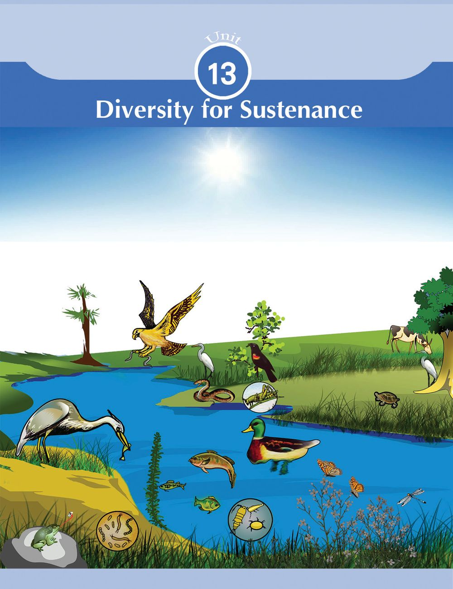
Page 22

Abiotic factors are also essential for the existence of the living world which comprises of animals, plants and Biosphere is the part of microorganisms. How are abiotic factors useful to biotic earth where life exists. It extends to soil, atmosphere factors? Discuss and complete the illustration given below suitably. and water.
Biosphere
Sunlight (Photosynthesis)
Soil (.........................)
Abiotic factors
Air (.........................)
Water (.........................) Illustration 13.1
Sun is the primary source of energy in the living world. Green plants convert light energy to chemical energy through photosynthesis.
Ecology
This energy gets transferred to other organisms through food chain. Plants that perform photosynthesis are called producers while organisms that depend on plants directly or indirectly for food are called consumers. The consumers that directly depend on plants are called primary consumers. Organisms that feed on primary consumers are called secondary consumers. Organisms that feed on secondary consumers are called tertiary consumers.
Ecology is the study of interaction between organisms and also between the organisms and their surroundings. This branch of study inlcudes different types of ecosystems, interaction between You are already familiar with the food web that illustrates organisms, environment food relations in nature. protection etc. Observe the illustration of a food web.
With the help of the indicators, discuss and write down the inferences.
182
Basic Science VIII
Page 23

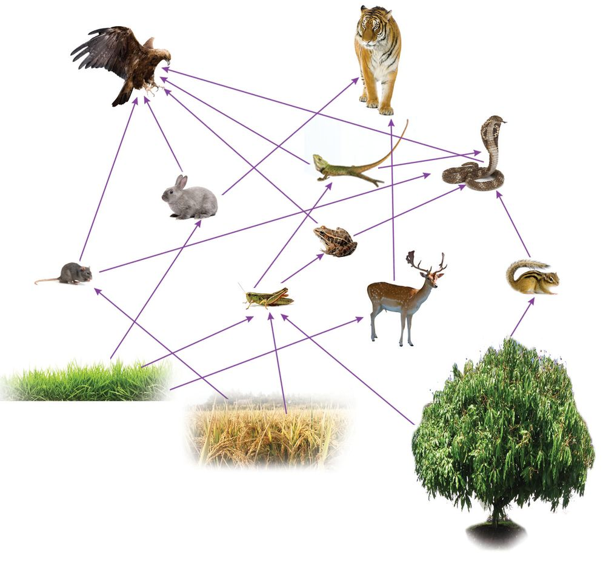
Illustration 13.2
Indicators
How do food chain and food web differ from each other?
Is a single organism involved in more than one food chain?
Is the possibility of an organism becoming food to more than one organism helpful to the existence of the food chain? Why?
How does the variation in the number of a particular organism in the food chain affect the existence of other organisms? Basic Science VIII 183
Page 24

Did you read the note on trophic level?
Trophic level The term indicates the position of an organism in the food chain. Since the food chain starts with plants, they represent the first trophic level. Herbivores that derive food directly from plants are included in the second trophic level. Carnivores that depend on herbivores for food are included in the third trophic level. Predators that prey on carnivores represent the fourth trophic level. As the food web turns increasingly complex, the same organism may represent different trophic levels.
Complete the illustration by including the organisms of the food web at various trophic levels. Tertiary consumers (Those who feed on carnivores too)
.......................................................
Fourth trophic level Secondary consumers (Carnivores) Third trophic level
.......................................................
Primary consumers (Herbivores) Second trophic level
.......................................................
Paddy, grass
Producers (Plants) First trophic level
....................................................... Illustration 13.3
Indicators
Does the same organism occupy more than one trophic level?
Is there any possibility of a fifth trophic level?
How does the elimination of organisms from the higher trophic levels affect the ecosystem?
Examine the food chains taken from the illustration 13.2. 1.
Grass Rabbit Eagle
2.
Grass Grasshopper Calotes Eagle
3.
Grass Grasshopper Frog Snake Eagle
Find out the trophic levels represented by the eagle in these food chains. Write them down in the science diary. The number of trophic levels and the position of organisms in the trophic levels of the ecosystem is not constant. It changes in accordance with the complexity and the length of the food chain.
184
Basic Science VIII
Page 25

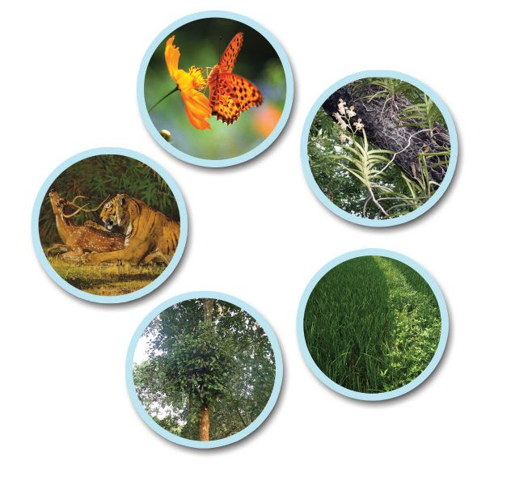
Ecological interactions Observe the illustration of some ecological interactions. See 'Jeevibandhangal’ in School Resources in IT @ school, Edubuntu. Flower and butterfly
Mango tree and vanda
Deer and tiger
Paddy and weeds Mango tree and loranthus
Illustration 13.4
Complete the illustration given below with suitable examples for ecological interactions.
Ecological interactions
Parasitism Mutualism Competition Predation Beneficial to one Beneficial to one and Harmful to both Beneficial to both harmful to the other. in the beginning. the organisms. but harmful to the other. Prey The parasite depends Then beneficial to on the host for becomes the food the one who nutrition. of the predator. wins. eg: ..............................
eg: Mango tree and loranthus
eg: eg: .............................. .............................
Commensalism Beneficial to one and is neither beneficial nor harmful to the other. eg: Mango tree and vanda
Illustration 13.5
There are many interactions in nature that we do not see or realise. These interactions maintain the balance and stability of the ecosystems. Food relations are visible instances of interaction among organisms.
Basic Science VIII 185
Page 26

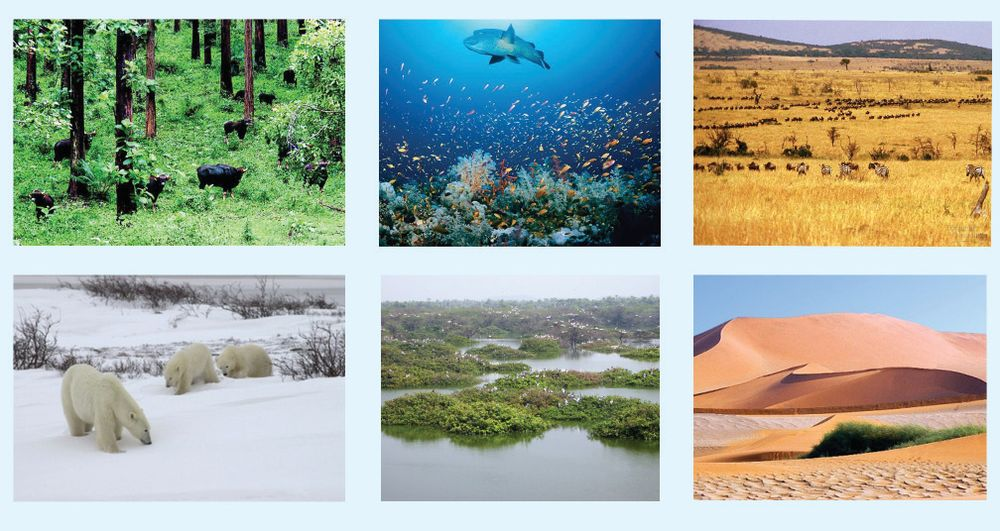
The ecosystem becomes more stable as the diversity of ecological interactions and abiotic factors increases.
Diverse ecosystems Observe the pictures given below.
Forest
Ocean
Grassland
Tundra
Wetland
Desert
Fig. 13.1
Different types of ecosystems
Collect information on the peculiarities of these ecosystems and the organisms found there.With the help of the indicators, discuss and write them down in the science diary.
Biodiversity Biodiversity includes all the diverse organisms that inhabit the earth along with their ecosystems. Biodiversity includes various levels like ecosystem diversity, species diversity and genetic diversity. This term which denotes the richness of the biosphere was first used by a British environmentalist, Walter. G. Rosen in 1985.
Indicators
186
Basic Science VIII
Are all ecosystems alike in biodiversity?
Page 27


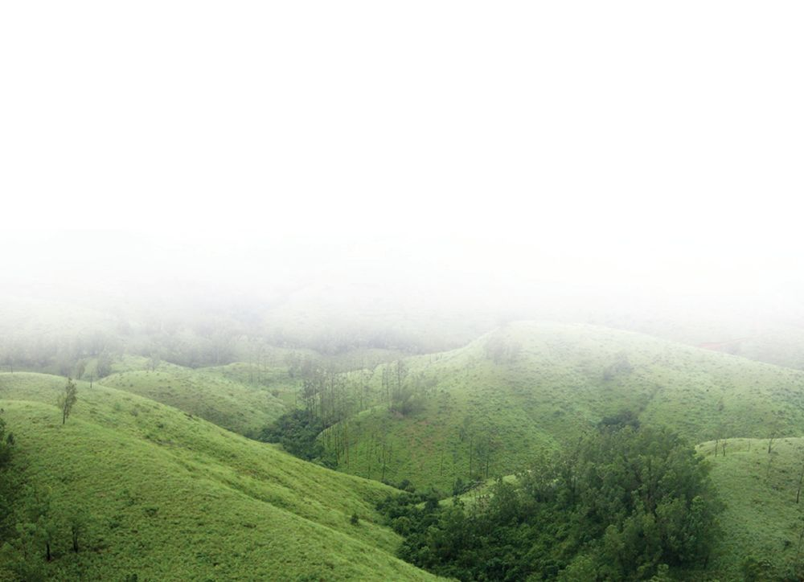
Are all organisms seen in an ecosystem also seen in another ecosystem?
What is the need for protecting natural ecosystems?
Importance of biodiversity What are the benefits of conserving biodiversity? In order to understand it, we must identify the services provided by biodiversity. Observe the illustration given below. On the basis of the illustration, prepare a note on the need for conserving biodiversity.
Availability of essential materials Food Medicine Fuels Construction materials Cultural Services Aesthetics Recreation Study Rituals and their practice
See Jaivavaividhyam innale, innu, nale in School Resources in IT @ School, Edubuntu.
Ecological Services
Biodiversity – Services
$ Soil formation $ Prevention of soil erosion $ O2 - CO2 balance $ Availability of fresh water $ Control of flood $ Climate control $
Auxiliary Services $ Nutrient cycling $ Pollination $ Biological control $ Seed dispersal $ Illustration 13.6
Basic Science VIII 187
Page 28

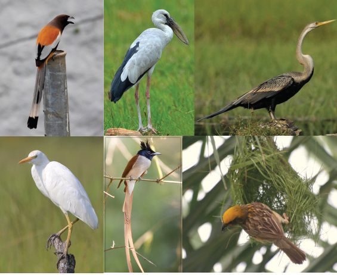

Biodiversity depletion What is happening to the biodiversity around us? Keen observation is necessary to understand it. Birds are found everywhere. Birds fall easy victims to changes in the ecosystem. Let us observe the birds around us to understand the present status of biodiversity. Bird watching is also an interestingly scientific hobby. You can refer to books or internet to identify unfamiliar birds. Remember to note down the peculiarities of external features and the nature of the birds observed. Observe the figure.
Biodiversity in Western Ghats under threat The Western Ghats, rich in biodiversity and lying parallel to the Arabian Sea, is more than 1500 kilometre long and 1.25 lakhs square kilometre wide. This region which is also known by names like Sahya Mountain or Sahyadri is abundantly rich with ecosystems such as forests, grasslands, sacred groves, marshes, rivers and ponds. Very rare species of the world are found here. This region is rapidly deteriorating due to the thoughtless intervention of human beings. The process of deterioration of ecological diversity in the Western Ghats has been accelerated by agriculture, dams which obstruct the flow of rivers, mining, exploitation of forest wealth, tourism and hunting etc.
Fig. 13.2 Different types of birds in Kerala.
Our surroundings were once rich with a multitude of birds like these. Has there been any change in the diversity of birds in your locality? What is your finding? Discuss with the help of indicators provided.
Indicators
Large scale destruction of ecosystems.
Over exploitation of the natural resources.
188
Basic Science VIII
Page 29


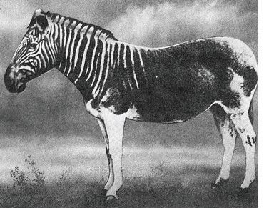
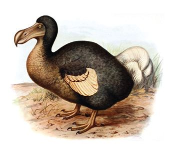
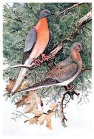
Excessive use of chemicals in agricultural fields.
No Bird Sings
Along with the inferences formulated through discussion, collect relevant supplementary materials and prepare a scientific article. Exhibit it on the wall magazine.
Lost links Observe the picture of certain extinct species. Dodo, a kind of flightless bird, was common in the island of Mauritius. Other species which have become extinct include passenger pigeons which flew in lakhs along the North American skies and the Quagga, a wild zebra variety from the southern part of Africa.
Dodo
Passenger pigeon
The book Silent Spring published in 1962 by an American researcher, Rachel Carson attracted attention worldwide because it elaborated on the environmental and health hazards caused by pesticides like DDT. Carson pointed out that birds and other organisms died in large numbers when DDT mixed with petroleum products, affectionately called 'insect bomb', was sprayed widely on agricultural fields. She established with the help of study reports that most pesticides caused cancer. This book was responsible for the ban on DDT in America in 1972. In this age when deadly pesticides are widely used, the ideas put forward by Carson's work are very relevant.
Quagga Fig. 13.3
What were the circumstances for the extinction of these organisms?
Do human beings have any role in it?
Discuss and write down the inferences in the science diary.
Basic Science VIII 189
Page 30

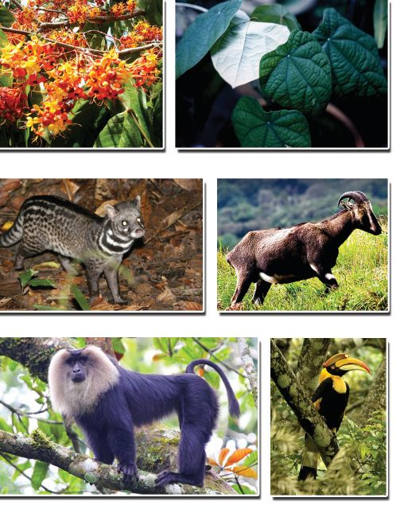
If not protected, these too...! There are many organisms on the verge of extinction due to several reasons. Some examples are given below.
Saraca indica (Ashoka tree) Maramanjal (Tree Turmeric)
Red Data Book IUCN (International Union for Conservation of Nature) is an organization for environmental protection, Malabar civet cat Nilgiri Tahr operating in different countries. Under the auspices of IUCN, a list of endangered plants and animals is prepared every year. This is known as the Red Data Book. Some Lion-tailed macaque Malabar hornbill countries prepare Red Fig. 13.4 Data Book on their own. Collect more information about these organisms and write The information in the Red them down in the science diary. Data Book is helpful to identify the extent of Let us preserve diversity biodiversity depletion and Sustainable development is possible only with the protection to plan out appropriate of nature. Analyse the illustration showing a wise approach conservation activities. to biodiversity. Write down your inferences in the science diary.
Know
Biodiversity Use
Protect
Illustration 13.7
190
Basic Science VIII
Page 31

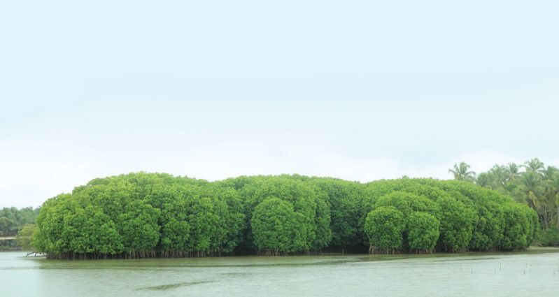
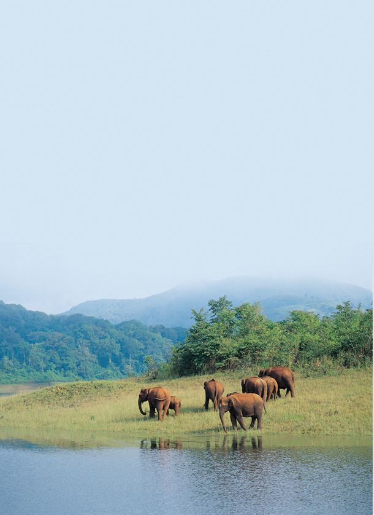
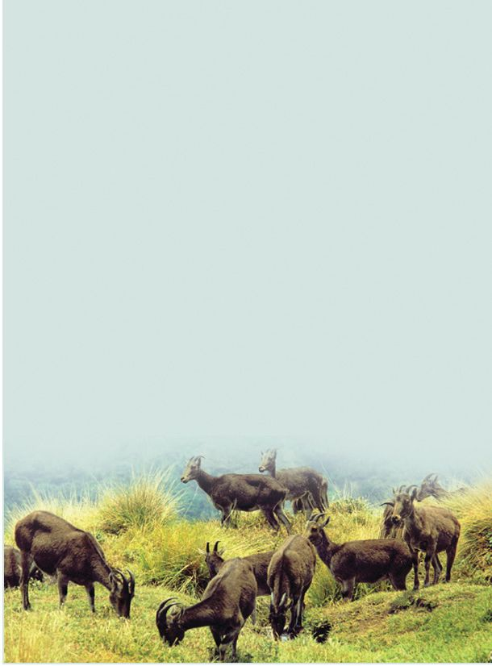
There are many national and international organisations and legal systems working for the conservation of biodiversity. The government conserves bio-rich areas declaring them as protected areas. Two types of conservation methods are prevalent. They are: 1. in-situ conservation method in which organisms are protected in their natural habitats and 2. ex-situ conservation method in which organisms are protected outside their natural habitats. Let us familiarise ourselves with some examples of such conservation methods.
In-situ conservation Wild Life Sanctuary
National Parks
These are forest areas declared as protected areas to prevent the extinction of wild lives by protecting the ecosystem. Peppara, Periyar, Wayanad etc., are examples of wild life sanctuaries in Kerala.
National Parks are designed to protect wild lives along with the protection of historical monuments, natural resources and geographical features of an area. Eravikulam, Silent Valley, Anamudi Shola, Mathikettan Shola and Pambadum Shola are the national parks in Kerala.
Community Reserves Community reserves are areas protected with the participation of the public. These are ecologically important places located in populated areas. The Kadalundi Community Reserve spread over the districts of Malappuram and Kozhikode is an example.
Basic Science VIII 191
Page 32
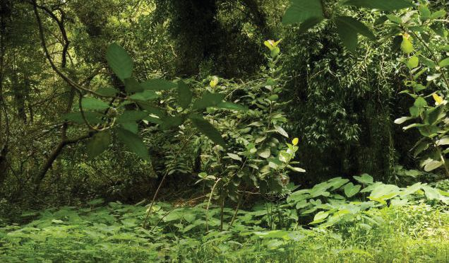
Biosphere reserves These are vast regions designed with an aim to protect world's important ecosystems, biodiversity and genetic resources. Biosphere reserves like the Nilgiris and Agasthyarkoodam include areas belonging to Kerala too.
Sacred groves These are small areas of biodiversity protected in regions inhabited by human beings. Due to changes in life style many of these which were highly bio-rich have been destroyed. Only a few are remaining now. Sacred groves play an important role in the conservation of water in the region too.
Ecological hotspots Ecological hotspots are areas rich in endemic species but facing the threat of habitat destruction. Each hotspot is ecologically a very important area of biodiversity. Out of the 34 hotspots all over the world, 3 of them are in India. They are the Western Ghats, North-Eastern Himalayas and the Indo-Burma region.
Complete the illustration of in–situ conservation suitably. In-situ conservation
Wild life sanctuary
National parks
Biosphere reserve
Community reserve
$ Protection of ecosystems $
$ $
$ Conservation with people's participation $
$ $
eg: Wayanad
eg: ...........................
eg: ...........................
eg: Agasthyarkoodam
Illustration 13.8
192
Basic Science VIII
Page 33


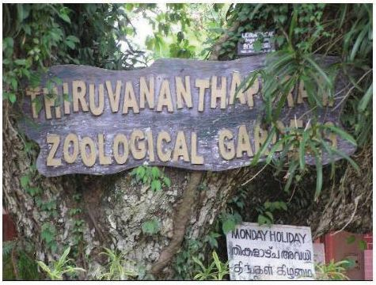
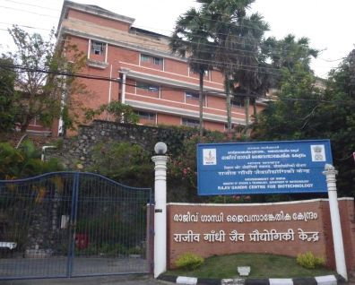
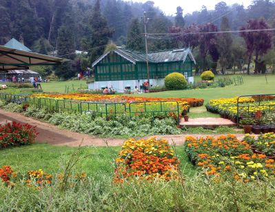
Ex-situ conservation
Zoological gardens Zoological gardens are conservation centres where different varieties of animals are protected and housed separately and where necessary arrangements are made available for their reproduction. They also function as conservation centres of organisms which have become extinct in wild. There are zoological gardens at Thiruvananthapuram and Thrissur in Kerala.
Botanical gardens These are wide research centres where rare and important plants of diverse species are protected. We can identify many plants and get more information about them by visiting a botanical garden. Jawaharlal Nehru Tropical Botanical Garden and Research Institute (JNTBGRI) at Palode in Thiruvananthapuram and Malabar Botanical Garden (MBG) at Olavanna in Kozhikode are examples.
Gene Banks
KT-487-2/Basic.Sci. 8(E) Vol-2
These are research centres with facilities to collect seeds and gametes to preserve them for a long time. Organisms can be recreated out of them whenever required. Rajiv Gandhi Centre for Biotechnology at Thiruvananthapuram is an example.
Indicators
What is the scope of ex-situ conservation?
What is the significance of gene banks?
See 'Vanyajeevisamrakshanam' in School Resources in IT @ School, Edubuntu.
Basic Science VIII 193
Page 34

Many government and non-government organisations design and coordinate environment protection activities. Let us familiarise ourselves with some of the organisations and institutions at the national and international levels.
WWF
IUCN
(World Wide Fund for Nature) (International Union for Conservation of Nature) Biodiversity conservation, prevention of IUCN is a Switzerland based exploitation and pollution of natural independent organisation resources are the objectives of WWF. Its working for the protection of headquarters is also in Switzerland. biodiversity.
There are organisations and institutions that work for the protection of nature in our place too. Enquire about them and collect information. What can I do for the protection of nature?
$ Plant saplings and nurture them. $ As far as possible, try to get information about forests and environment directly. Share the knowledge gathered. $ Keep the surroundings clean. $ Take part in awareness programmes. $ $
194
Basic Science VIII
Page 35

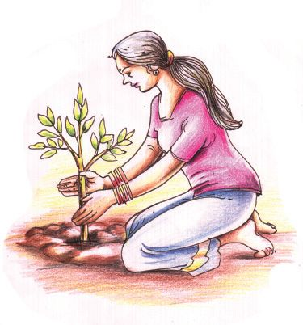
Knowing our forests Nature camps are conducted in about 30 centres by the Department of Forest and Wild life in Kerala. One gets an otherwise impossible opportunity to be part of safari trips into forests in these camps of one to three days duration. You can also participate in these camps by applying to the concerned wild life warden under the auspices of the school Nature Club. Make use of such opportunities to learn about forests closely.
It is our duty to conserve and keep bioresources for future generations. If we do not act with this realization, our existence itself will be in danger.
Significant learning outcomes The learner can
illustrate trophic levels by including organisms in the ecosystem.
explain how the various ecological interactions influence the existence of ecosystem.
explain what biodiversity is.
find out the causes of biodiversity depletion and suggest remedies.
engage in conservation activities realizing the importance of conservation of biodiversity.
Let us assess 1.
Phytoplankton – zooplankton - fish - seal - shark a) In which trophic level is the secondary consumer of this food chain included? b) Rewrite the food chain in such a way that the organism in the third trophic level figures in the second trophic level. Basic Science VIII 195
Page 36

2.
Find the odd one out from the following. Justify your answer. a) Quagga, Malabar civet cat, Nilgiri Tahr, Lion-tailed macaque. b) Eravikulam, Mathikettan shola, Periyar, Silent Valley
3.
Examine the statements given below and rewrite if there are errors. a) Extinct species are included in the Red Data Book. b) WWF is an organisation working with the objective of protection of biodiversity. c) Gene banks are included in in-situ conservation.
Extended activities 1.
Identify the plants and animals around you and prepare a local Biodiversity Register.
2.
Prepare a science journal by including information, pictures and reports of biodiversity.
3.
Prepare and exhibit posters that emphasise the importance of conservation of biodiversity.
196
Basic Science VIII